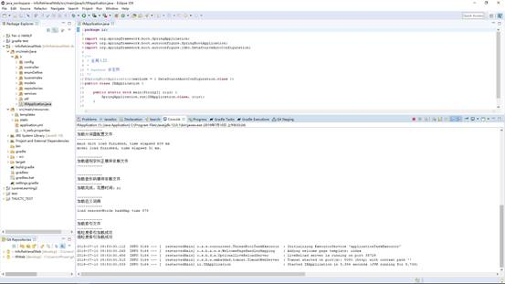
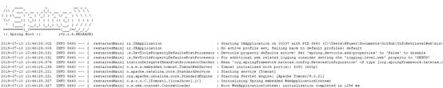
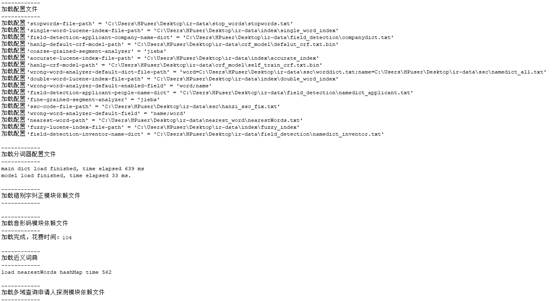
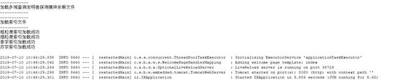
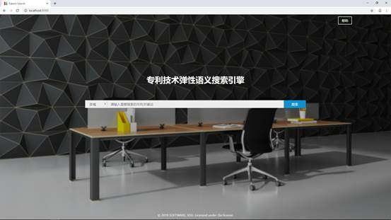
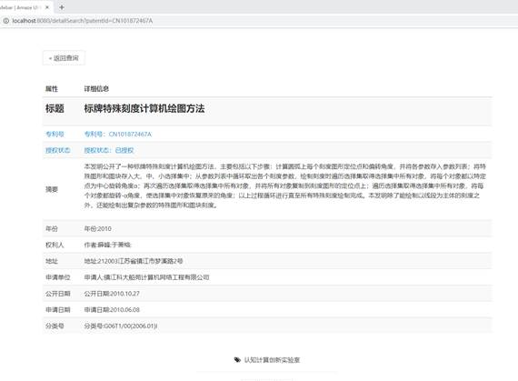

产品使用说明书
目录
打开eclipse中本项目下的IRApplication.java这个类，并且运行其main方法，运行过程中会加载好所有需要的配置，包括四种粒度的索引、分词配置文件、近义词哈希表、错别字纠正依赖文件等等。

运行成功应该如下图所示，如果出现红字报错，那应该是配置文件有问题



在网页内输入（localhost:8080），进入主页
主页中有一个搜索框和搜索按钮和一个选择搜索域的下拉框（搜索域在后面会说），为了简洁美观，主页的功能较为简单，主要的功能都是在下一个页面中。

在主页中输入查询语句如“深度学习”，点击搜索，会进入第二个页面
在这个页面中包含了全部的功能（除了高级搜索）。首先能够选择查询索引的粒度，在搜索框的左边的下拉框中选择（包括模糊、精确、单字、双字四种粒度）。能够添加各种查询条件，位于搜索框下面，包含授权限制的条件（包括全部、通过和不通过），姓名首字母的条件（全部和A-Z），搜索域的条件（包括多域、标题、摘要、申请人、专利号、发明者、地区），时间范围限制的条件。高级搜索的页面需要点击本页面中的高级搜索链接进入（具体内容在后面）
例如查询“深度学习”中已授权的专利。
例如查询拼音以M开头的发明者。
例如选择发明者域查询戴老师。域选择下拉框选择“发明者”。
例如查询戴老师的从2010年到2012年的专利。在两个时间选择器中选择开始和结束时间。搜索框中输入关键字查询。
点击搜索框前的下拉框以选择搜索粒度，比如使用双字切分索引进行搜索，搜索“民共”。
注：2.2.1-2.2.5中的查询条件可任意组合进一步缩小查询范围。
也可以对查询得到的结果进行筛选，位于搜索结果右边，包括对分类的筛选（A-H的类别筛选），对时间的筛选（最近三年、最近五年、最近十年），对授权状态的筛选（通过和不通过）。
例如对“计算机”搜索的结果，筛选A类（人类生活必须）这个类别的专利，在右侧分类框中点击A类，即可筛选。
例如对2.3.1中的结果，继续筛选最近三年的专利。在右侧时间框中点击“最近三年”，即可筛选。
例如对2.3.2中的结果，继续筛选未授权的专利。在右侧授权状态框中选择“未授权”，即可筛选。
点击展示页面的高级搜索按钮，可以进入高级搜索页面
这个页面包含的功能是将各种查询进行逻辑连接，然后综合查询结果，逻辑连接符共有3种（与、或、非），查询域支持标题、摘要、申请者、发明人、地区。
点击新增按钮，可以添加一条查询语句，点击后面的删除，可以删除一条查询语句
点击右下角的“搜索按钮”，搜索上面的逻辑查询条件（标题中出现必出现计算机，可出现电脑，不出现配件的专利）
结果展示在高级搜索展示页，如下，右侧的筛选条件，可进一步缩小范围。
例如搜索计算机，会将搜索满足的专利条目按照一定规则排序在展示页面上。每个专利条目展示专利的部分信息。提供分页功能，可点击每页下方的页码，进行跳转。
点击任意一个专利条目的标题可以进入专利具体信息展示页面（例如点击上图“标牌特殊刻度计算机绘图方法”），会对该条专利进行详细信息展示。如下
